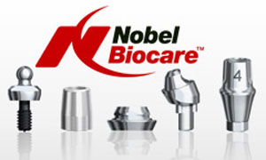

NobelActive implants possess self-condensing abilities and are advantages in all types of bone and in compromised situations, especially in softer bone.Unlike comventional implants, these implants don't cut through bone, but gently press through it like a corkscrew. This bone condensing capability delivers high initial stability. The narrow neck is designed to preserve marginal bone and promote long-lasting soft tissue stability.
The self-drilling ability of NobelActive implants allows it to be inserted into sites prepared to a reduced depth. This is useful where sites are close to vital anatomical structures: the mandibular nerve canal or the maxillary sinus, and nose cavity for instance. This means you can be confident of accurate placement while having a minimally invasive procedure. The unique combination of design features of NobelActive implants is derived from thorough investigation into the bio-mechanical dynamics of hard and soft tissues surrounding dental implants.
NobelActive offers unique advantages
- High initial stability, even in compromised bone situations
- extreme stability in fresh extraction sites and sites with thin sinus floors
- minimal osteotomy with minor trauma to bone and surrounding tissues
- Bone condensing property
- Redirecting capability for optimal placement
- Dual-function prosthetic connection
The expanding tapered body with double variable thread design and apical drilling blades delivers high initial stability and enables experienced clinicians to ‘actively’ change implant direction for optimal restorative position.